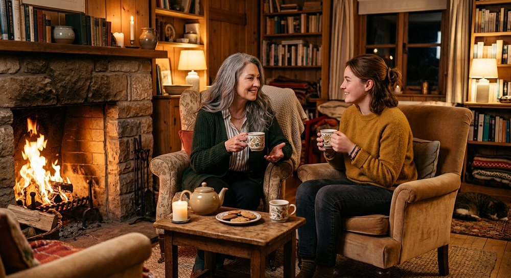

“May our souls agitate us until we tend to them.”
— Leslie Walker
Personalized guidance for individuals, couples, and families seeking greater clarity, connection, balance, and personal growth. Through thoughtful conversation and meaningful questions, you're given the space to uncover your own insights and discover what feels right for you.
Whether you're coming in as a family, as a couple, or on your own, the work is the same at its core: making sense of what's hard, and finding a way forward that actually fits your life.

Take a few moments to answer some simple questions about what you're navigating and what you'd like support with. Your answers can help identify which type of guidance may be the best fit for you.
Explore Services